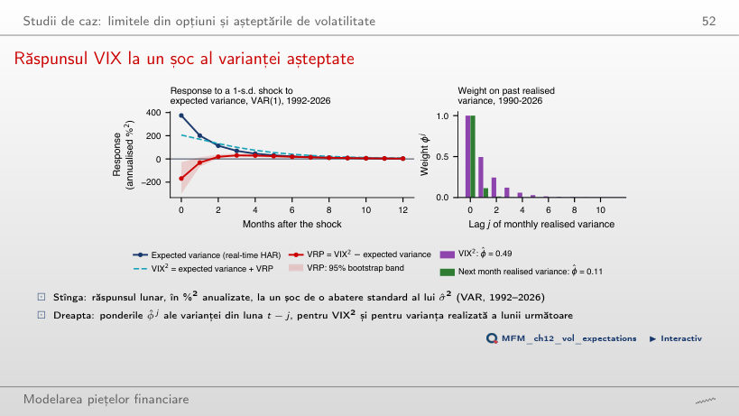

În stînga este slide-ul din curs, în dreapta aceeași figură, calculată în browser din aceleași date. Butonul ▶ modifică parametrul pas cu pas.
Black–Scholes și senzitivitățile · Delta hedging în practică · Volatilitatea implicită și zîmbetul · Opțiunile Bitcoin și suprafața de volatilitate · VIX și prima de risc a varianței · Opțiuni cu zero zile pînă la scadență · Studii de caz: limitele din opțiuni și așteptările de volatilitate
Black–Scholes și senzitivitățile
Senzitivitățile: o identitate, toate derivatele

Răspuns
Scade de la 0,078 la 0,016, aproape ca 1/σ, în timp ce vega rămîne aproape constantă (0,194 la σ = 10%, 0,197 la σ = 50%). La K = 100 și σ = 20%, call-ul pe o lună are cea mai mare gamma (0,069, față de 0,039 pe trei luni și 0,019 pe un an) și cel mai rapid time decay (theta −0,043 pe zi), iar call-ul pe un an are cea mai mare vega (0,381 pe punct de volatilitate). Vega exprimată pe unitate de σ este ΓS²στ. Pe un punct procentual de volatilitate, vega este ΓS²στ/100: pentru call-ul pe trei luni, la S = K = 100 și σ = 20%, valoarea este 0,197.
Delta hedging în practică
Delta hedging discret: algoritm și eroare

Răspuns
De aproximativ patru ori. Dublarea lui N înjumătățește aproximativ varianța erorii, nu abaterea standard: abaterea standard scade ca 1/√N (panta estimată pe axele logaritmice este −0,48). Pentru înjumătățirea abaterii standard trebuie aproximativ cvadruplat N: de la 63 la 252 de reechilibrări pe cele trei luni. În simulare, abaterea standard scade de la 9,5% la 4,8% din primă. Costurile de tranzacționare cresc însă cu N: proporțional cu N la un cost fix pe reechilibrare, aproximativ ca √N la costuri proporționale cu valoarea tranzacționată.
Vînzarea volatilității la 20%: trei rezultate

Răspuns
În această simulare, vînzătorul cîștigă pe 2,2% dintre traiectorii. P&L-ul mediu este −0,99 pe opțiune, iar abaterea standard este 0,68. Aproximarea de ordinul întîi este vega × (σ implicită − σ realizată), adică 0,197 × (20 − 25) ≈ −0,99. Reechilibrarea zilnică lasă o eroare discretă, astfel încît unele traiectorii au totuși P&L pozitiv. Cu volatilitatea realizată de 15%, media este +0,98, pozitivă pe 99,8% dintre traiectorii.
Volatilitatea implicită și zîmbetul
Trei surse ale zîmbetului

Răspuns
Înclinarea se inversează: la ρ = +0,9, volatilitatea implicită Heston este 10,7% la K/S = 0,8 și 28,2% la K/S = 1,2; la ρ = 0, zîmbetul este aproape simetric (23,7% și 22,4%). Pe slide (ρ = −0,7), cea mai mare volatilitate implicită la K/S = 0,8 o dau salturile Merton: 31,0%, față de 16,3% ATM, aproape de distribuția istorică (30,6%, față de 13,9% ATM). Măsurată față de nivelul ATM, aripa istorică urcă cel mai mult: 16,7 puncte, față de 14,7 la Merton și 12,0 la Heston. Heston cu ρ = −0,7 dă 28,6%, iar aripa lui dreaptă este cea mai joasă (14,6% la K/S = 1,2), pentru că o corelație negativă înclină zîmbetul spre stînga.
Opțiunile Bitcoin și suprafața de volatilitate
Zîmbetul Bitcoin

Răspuns
Pe grila verificată, valorile minime sînt negative la 2 octombrie (−0,017) și 27 noiembrie (−0,009), deși erorile acestor ajustări sînt mici (0,23 și 0,12 puncte de volatilitate). O eroare de ajustare mică nu garantează absența arbitrajului. Nici trecerea testului pe această grilă nu este o garanție globală: pentru 9 octombrie, g(−2,5) ≈ −0,242, în afara grilei. Ca formă, este un zîmbet, nu un skew: ambele aripi cresc, pentru că Bitcoin poate sări atît în sus, cît și în jos. Opțiunile put sînt totuși puțin mai scumpe decît call-urile la |k| = 0,15: skew-ul IV(k = +0,15) − IV(k = −0,15) este negativ la toate cele 9 scadențe, de la −0,1 puncte (10 zile) la −2,4 puncte (66 de zile). Rădăcina erorii medii pătratice a ajustărilor SVI este de cel mult 0,70 puncte de volatilitate.
Distribuția neutră la risc a Bitcoin

Răspuns
Probabilitatea estimată este 1,24%, cu interval bootstrap de 95% [1,16%; 1,27%], de aproximativ 9 ori mai mare decît sub distribuția log-normală. Valoarea 0,14% provine din reperul log-normal cu volatilitatea ATM de 36,4%. Valoarea 1,08% omite cele 0,16 puncte procentuale extrapolate sub cel mai mic strike cotat (0,47F). Acestea fac parte din probabilitatea estimată, dar depind de extrapolarea SVI.
VIX și prima de risc a varianței
VIX, 1990–2026

Răspuns
VIX a depășit 30 în 7,94% dintre cele 9.284 de zile. Valoarea 0,81% corespunde pragului 50, iar 37,01% pragului 20. Frecvența depășirilor depinde de pragul ales. Media este 19,4, iar maximul, 82,7, a fost atins pe 16 martie 2020. Vîrfurile apar brusc și scad încet, ca în modelele GARCH.
Volatilitatea implicită față de cea realizată, S&P 500

Răspuns
În aproximativ 86% dintre zile; 14% reprezintă evenimentul invers. O prognoză nedeplasată nu implică automat o frecvență de 50% a depășirilor. Pe întregul eșantion, prima medie este 4,09 puncte de volatilitate (eroarea standard Newey–West 0,27), adică 113 %² în varianță, cu t = 5,5. Valorile negative apar cînd volatilitatea realizată ulterior depășește VIX; cele mai mari pierderi apar în episoade de stres: cea mai slabă fereastră, începută pe 20 februarie 2020, are −72,0 puncte. Din 2020, diferența medie în volatilitate este 3,82 puncte, cu SE Newey–West 0,90 și t = 4,25. Diferența medie în varianță este 73,90 %², cu SE 79,90 %² și t = 0,92.
Calitatea VIX ca prognoză

Răspuns
Testele separate nu decid rezultatul testului comun. Aici, corelația estimărilor este −0,90, iar ambele abateri față de ipoteza nulă sînt negative (α̂ = −51,9, β̂ − 1 = −0,14). Cu această covarianță, testul Wald dă χ²₂ = 41,7 și p ≈ 8,9·10⁻¹⁰. VIX explică R² = 0,37 din varianța realizată ulterior, iar varianța realizată trecută doar 0,29.
Opțiuni cu zero zile pînă la scadență
Gamma și erodarea în timp aproape de scadență

Răspuns
La S = K = 100, r = 0 și σ = 16%, gamma este 0,396 pentru τ = 1/252 și 0,086 pentru τ = 21/252. Raportul este aproximativ √21 ≈ 4,6: factorul φ(d₁) se schimbă foarte puțin aici. O mișcare de 1% în ultima zi schimbă delta cu aproximativ 0,4; relația dΔ ≈ Γ·dS este o aproximație locală. Valorile 0,167 și 0,030 reprezintă −theta pe zi calendaristică, evaluat cu una, respectiv 30 de zile calendaristice rămase.
Studii de caz: limitele din opțiuni și așteptările de volatilitate
Studiu de caz: limita și prima realizată

Răspuns
Nu. Limita restricționează media condiționată Eₜ[Rᵉ], nu fiecare randament realizat. D₁ = 0 la toate orizonturile înseamnă că testul nu respinge validitatea; nu o dovedește. Pentru caracterul strîns al limitei, testele asimptotice resping, dar p-value-ul de eșantion finit la 12 luni este 8,3%, deci nu respingem la 5% prin acel test. Marja medie la 12 luni este aproximativ 5,18 puncte procentuale pe an în lucrare, cu dividende, și 2,91 pe indicele de preț din figură. Corelația dintre limită și randamentul realizat este doar 0,15.
Răspunsul VIX la un șoc al varianței așteptate

Răspuns
Estimarea punctuală este negativă în toate eșantioanele: −69 %² pînă în 2005, −254 %² pînă în 2008. Banda punctuală de 95% include zero numai pentru eșantionul încheiat în 2006. Pe eșantionul complet, răspunsul este −169 %², cu banda [−300; −27]: VIX² crește doar cu 55% din șocul varianței așteptate. Răspunsul VRP devine pozitiv din luna 2 și este maxim în luna 3 (+30 %²). Ponderile arată aceeași direcție: φ̂ = 0,49 pentru VIX², față de 0,11 pentru varianța realizată a lunii următoare. Rezultatul este condiționat de ordonarea Cholesky și de seria HAR estimată; nu stabilește singur o regulă de tranzacționare sau mecanismul așteptărilor lente.
S&P 500 și VIX: închideri zilnice EODHD, 1990–2026. Opțiuni Bitcoin: instantaneul lanțului Deribit din 22 septembrie 2026, 07:51 UTC. Delta hedging: 20 000 de traiectorii ale mișcării browniene geometrice. Studiul de caz: limitele zilnice din pachetul de replicare Back, Crotty și Kazempour (2022); rata fără risc din Kenneth French Data Library. Al doilea studiu de caz: S&P 500 și VIX lunar, ianuarie 1990 – august 2026.